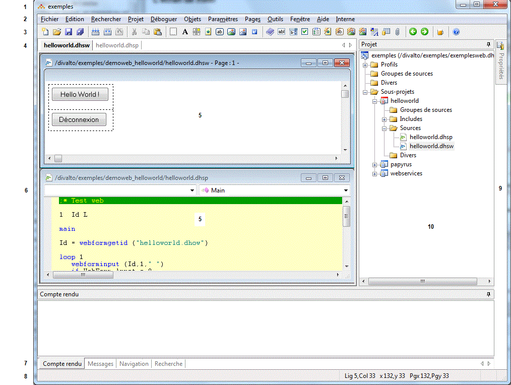

Sur l'écran de Xwin, figurent les éléments suivants :
Titre général de la fenêtre Xwin (1).
En mode cascade ou mosaïque (voir L' interface multi-documents MDI), le titre de la fenêtre Xwin est semblable au titre habituel des fenêtres Windows (chaque fenêtre MDI dispose d'une barre de titre spécifique).
En mode MDI plein écran, le titre de la fenêtre MDI courante s'ajoute, entre crochets, au titre général (car l'unique fenêtre MDI affichée ne dispose plus d'une barre de titre propre).
Barre de menus (2).
Xwin propose des barres de menu différentes, suivant le type de la fenêtre MDI active : texte source, masque écran (masque proprement dit, ressource, menu, barre d’outils), masque imprimante, masque Web et dictionnaire.
Remarques :
– En mode MDI plein écran, une icone apparaît à gauche des libellés du menu, indiquant le type de l'unique fenêtre MDI affichée (en mode cascade ou mosaïque, l'icone apparaît à gauche de chaque barre de titre de fenêtre MDI présente).
– Si vous cliquez avec le bouton droit de la souris à l'intérieur du corps d'une fenêtre MDI ou d’une fenêtre de la barre d’onglets verticaux, vous ouvrez un menu surgissant contextuel.
Barre(s) d'outils (3).
Xwin propose des barres d'outils différentes, suivant le type de la fenêtre MDI active : texte source, masque écran (masque proprement dit, ressource, menu, barre d’outils), masque imprimante, masque Web et dictionnaire. En cours d'exécution d'un programme en mode " débogueur ", une barre d'outils spécifique " débogueur " s'ajoute à la barre de base.
Remarque : La barre d'outils des fenêtres de type texte et dictionnaire inclut une boîte multi-choix permettant la saisie ou la sélection rapide d'une chaîne à rechercher.
Barre d’onglets « Fichiers » (4).
Cette barre présente un onglet par fichier ouvert dans l’éditeur. Cliquer sur l’un de ses onglets sélectionne le fichier correspondant dans la zone MDI.
Pour plus détails, voir la rubrique Barre d'onglets Fichiers.
Fenêtre(s) MDI (5).
La zone centrale de la fenêtre Xwin affiche une ou plusieurs fenêtres MDI, selon le mode choisi : plein écran, cascade ou mosaïque. On distingue les types de fenêtre MDI suivantes : texte source, masque écran (la fenêtre affichant alors soit le masque proprement dit, soit ses ressources, soit un menu ou soit une barre d’outils), masque imprimante (graphique ou caractères), masque Web ou dictionnaire.
Chaque fenêtre MDI présente à l'écran affiche un titre spécifique. Celui-ci comprend :
– Le nom du fichier édité.
– Suivi d'une étoile (*) si une modification a été faite depuis la dernière sauvegarde.
– Dans le cas d'un fichier masque, suivi du numéro et du titre de la page ou du bloc en cours d'édition.
Les fenêtres MDI de type "texte source", "dictionnaire de RecordSql" et "dictionnaire de Jointures Sql" comportent une barre de navigation (6).
Barre d’onglets « Comptes rendus » (7).
Cette barre présente un onglet par type de compte rendu (pour plus détails, voir la rubrique Barre d'onglets Comptes rendus) :
– Onglet Compte rendu : affiche les comptes rendus de compilation et d’exécution.
– Onglet Messages : affiche différents messages complémentaires (par exemple, les erreurs détectées au chargement d’un dictionnaire). Ces messages sont datés et sont conservés tant que Xwin n'est pas refermé. Vous pouvez effacer le contenu de la fenêtre manuellement en cliquant avec le bouton droit de la souris dans la barre de titre de l'onglet et en sélectionnant le choix Effacer du menu contextuel.
– Onglet Navigation : affiche le résultat d’une commande de navigation.
– Onglet Recherche : affiche le résultat d'une recherche (recherche multi-fichiers, recherche de toutes les lignes d'un source).
En phase de mise au point (débogueur), s’y ajoutent :
– Onglet Contexte : affiche automatiquement les variables nommées par l'instruction pointée dans la pile (plus les deux instructions précédentes et l'instruction suivante).
– Onglet Variables : affiche la liste actualisée des variables qui ont été placées dans cette fenêtre.
– Onglet Locales : affiche la liste actualisée des variables locales à la fonction ou à la procédure pointée dans la pile.
– Onglet Pile : affiche l'état courant de la pile (liste des procédures et fonctions en cours d'appel ; la pile renseigne sur le " chemin " emprunté par le programme pour arriver sur l'instruction en cours).
– Onglet Listes : présente l’état courant de toutes les listes créées par le programme.
– Onglet Attributs : présente l’état courant des listes d’attributs dynamiques.
Barre d'état (8).
La barre (ou ligne) d'état est tout d'abord divisée en deux zones.
Dans la partie gauche, sont ponctuellement affichés des messages ou des renseignements dépendant de l'action effectuée (exemples : message " Fin de fichier dépassée " en recherche de chaîne de caractères ; " valeur de la donnée cliquée " en cours de mise au point).
Dans la partie droite, est affiché le mnémonique LS si le fichier est en "lecture seule". Le reste dépend du type de la fenêtre MDI active :
– Type texte : Sont affichés les numéros de ligne (Lig) et de colonne (Col) reflétant la position du curseur dans le texte ainsi que le mode de saisie courant (INS pour insertion, REM pour remplacement).
– Type masque : Sont affichés en particulier les numéros de ligne (Lig) et de colonne (Col), les coordonnées absolues (x et y) et les coordonnées relatives à la clip grille (Pgx et Pgy) reflétant la position de la souris dans la page ou le bloc.
– Type dictionnaire : Sont affichées la base et éventuellement la table courantes.
Barre d’onglets « Verticaux » (9).
Cette barre présente l’onglet :
– Projet (10) pour la fenêtre Projet (tous types de source - épinglé et donc absent de la barre d'onglets dans l'exemple du schéma).
– Propriétés pour la fenêtre des propriétés des objets (masques uniquement - refermé et donc présent dans la barre d'onglets dans l'exemple du schéma).
– Traitements pour la fenêtre Arbre des traitements (sources de traitement masque/dictionnaire uniquement).
– Tableaux pour la fenêtre Arbre des tableaux d'un bloc (masque imprimante graphique uniquement).
Pour plus détails, voir la rubrique Barre d'onglets verticaux.
Pour afficher la fenêtre Projet
Pour afficher la fenêtre des propriétés
Pour afficher la fenêtre Arbre des traitements
Pour afficher la fenêtre Arbre des tableaux d'un bloc
Pour afficher la fenêtre des comptes rendus
Pour afficher la fenêtre compte rendu
Pour afficher la fenêtre Messages
Pour afficher la fenêtre Recherche
Pour afficher la fenêtre Navigation
Pour afficher la fenêtre Variables
Pour afficher la fenêtre Locales
Pour afficher la fenêtre Contexte
Pour afficher la fenêtre Listes
Pour afficher la fenêtre Attributs
Pour modifier la taille des fenêtres de Xwin
Pour effacer la fenêtre Messages